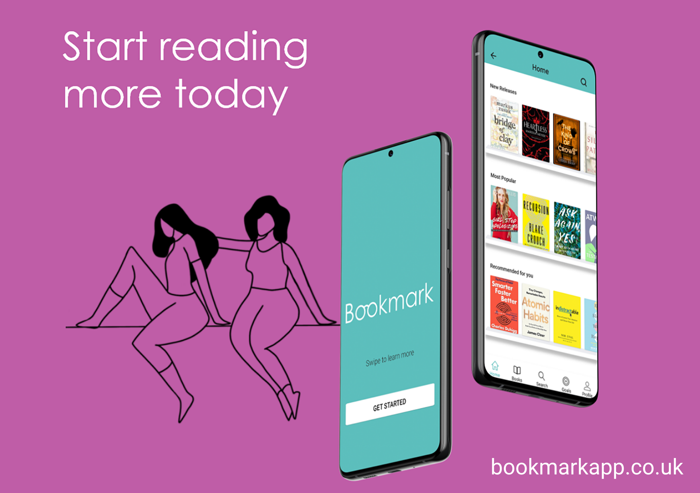
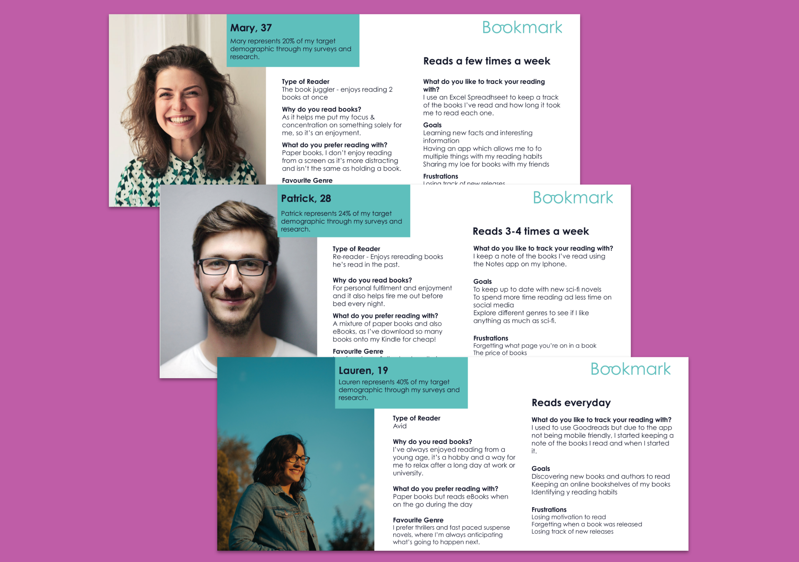
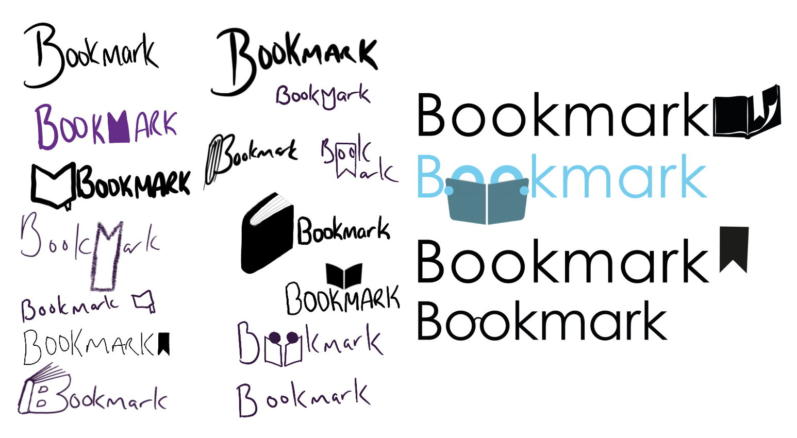
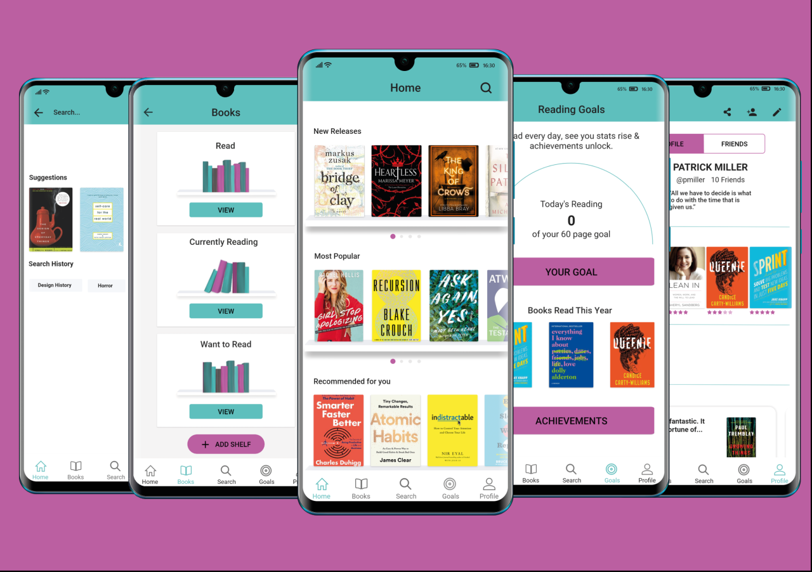

Bookmark
Final Year University Major Project
UX/UI Design & Branding
May 2020
What is Bookmark?
Bookmark is an app to help encourage users to increase reading habits. In 2018, only a shocking 51% of UK adults managed to read a book in that last year. With Bookmark I aim to change that.
The Problem
Reading habits are steadily declining, and there is no app on the market that enable users to have this gamification element to their enjoyment for reading.

Initial Ideation Stage
I brainstormed some ideas around ‘How might we…’ through using this open question framework to guide my thinking and spark some ideas around major issues and how I could start to solve some of these problems.
User Research
With my survey I wanted to identify user’s reading habits and to be informed about whether they already track the reading progress online via another app. I received over 109 responses to my type-form survey which I posted to three subreddits, book club, book lovers and books. Some of the key statistics from my user research include identifying my target audience:
38.5%
of my users are 18 - 24
57%
of my users are 25 - 45+
51%
of users read every day
66%
of users are interested in my app
User Personas

Three key user groups were identified through user personas. The first tracks their reading habits already but is limited to tracking it on a website.
Then some would simply like the app, so they can immediately start increasing their reading habits.
Lastly there is the group of regular readers who have nothing to track their reading on. They want to use the app for maintenance & to keep up to date with everything read. The feature of three different bookshelves would be beneficial to these users.
Low Fidelity Wire-Framing
Brand Development
These are some initial logo ideas for Bookmark I created using Procreate. I used the concept of B being a physical book. I also liked the idea of incorporating an actual bookmark symbol into the word, possibly upside down to symbolise the M.

Final Logo for Bookmark
My final logo after a lot of brainstorming and experimentation. I pretty pleased with how it’s turned out, as I explored a lot of different options before finally settled on this particular idea.

High Fidelity Designs
I created my designs using Adobe XD. After conducting usability testing, I was able to improve my prototype. The first image below is the onboarding flow. Whilst the final 3 show the before and after changes to the UI through feedback.
The Solution - Bookmark

Bookmark will have a range of features and primarily five main screens for the users to switch between in the tab bar. These include Home, Books, Search, Reading Goals and a Profile screen. Bookmark is an app solely based on Android.
Bookmark offers the following features:
- Track their reading habits
- Participate in reading challenges
- Set daily reading goals in hours or pages
- Unlock achievements
- Connect with friends
- All new and relevant book reviews
- Three default bookshelves, Read, Currently Reading & Want to Read
Interactive Prototype
Click through below to see the Bookmark Prototype!
What's Next

The Bookmark Beta prototype is currently under development. Keep your eyes peeled on our social media for the official launch of Bookmark!
Case Studies
Below are three case studies that go over the steps I took during my two semesters to create my fully functional prototype Bookmark: